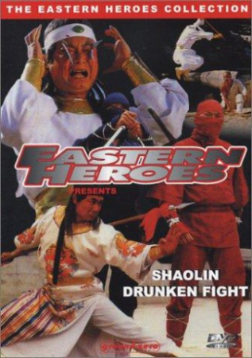

Also known as:Gimunsayukbang (original title)
Country:South Korea, 95 minutes
Spoken languages:Mandarin
Genres:Action
Director(s):Wu-Hyeong Choi, Wen-Po Tu
Writer(s):Jeong-yong Kim
Video Codec:Unknown
Number: 2731


Certification:
Storyline:
A young man whose family is killed by a bunch of ruthless martial art masters wants to take revenge upon the evil killers. After discovering the way to the Shaolin Temple, the young man studies Kung Fu techniques, one is the 'drun...
Cast:


Medium: Original DVD,
Comments: Part of: The Martial Arts Essentials Volume 6 - Drunken Masters
Loaned: No
Aspect ratio: Unknown